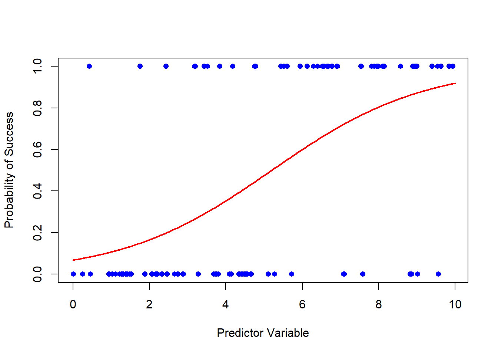

Logistic regression is a statistical method used for predicting the probability of a binary outcome. It’s a fundamental tool in machine learning and statistics, often employed in various fields such as healthcare, finance, and marketing. We use logistic regression when we want to understand the relationship between one or more independent variables and a binary outcome, which can be “yes/no,” “1/0,” or any two-class distinction.
Getting Started
Before we dive into plotting the logistic regression curve, let’s start with the basics. First, you’ll need some data. For this blog post, I’ll assume you have your dataset ready. If you don’t, you can easily find sample datasets online to practice with.
Load the Data
In R, we use the read.csv function to load a CSV file into a data frame. For example, if you have a dataset called “mydata.csv,” you can load it like this:
# Load the data into a data framedata <-read.csv("mydata.csv")
# A tibble: 6 × 2
x y
<dbl> <int>
1 2.88 0
2 7.88 1
3 4.09 0
4 8.83 0
5 9.40 1
6 0.456 0
Fit a Logistic Regression Model
Next, we need to fit a logistic regression model to our data. We’ll use the glm (Generalized Linear Model) function to do this. Suppose we want to predict the probability of a “success” (1) based on a single predictor variable “x.”
# Fit a logistic regression modelmodel <-glm(y ~ x, data = df, family = binomial)broom::glance(model)
Now that we have our model, we can use it to predict probabilities. We’ll create a sequence of values for our predictor variable, and for each value, we’ll predict the probability of success, in this case y.
# Create a sequence of predictor valuesx_seq <-seq(0, 10, 0.01)# Predict probabilitiesprobabilities <-predict( model, newdata =data.frame(x = x_seq), type ="response" )head(x_seq)
The predict function here calculates the probabilities using our logistic regression model.
Plot the Logistic Regression Curve
Finally, let’s plot the logistic regression curve. We’ll use the plot function to create a scatter plot of the data points, and then we’ll overlay the logistic curve using the lines function.
# Plot the data pointsplot( df$x, df$y, pch =16, col ="blue", xlab ="Predictor Variable", ylab ="Probability of Success" )# Add the logistic regression curvelines(x_seq, probabilities, col ="red", lwd =2)

And there you have it! You’ve successfully plotted a logistic regression curve in base R. The blue dots represent your data points, and the red curve is the logistic regression curve, showing how the probability of success changes with the predictor variable.
Conclusion
I encourage you to try this out with your own dataset. Logistic regression is a powerful tool for modeling binary outcomes, and visualizing the curve helps you understand the relationship between your predictor variable and the probability of success. Experiment with different datasets and predictor variables to gain a deeper understanding of this essential statistical technique.
Remember, practice makes perfect, and the more you work with logistic regression in R, the more proficient you’ll become. Happy coding!